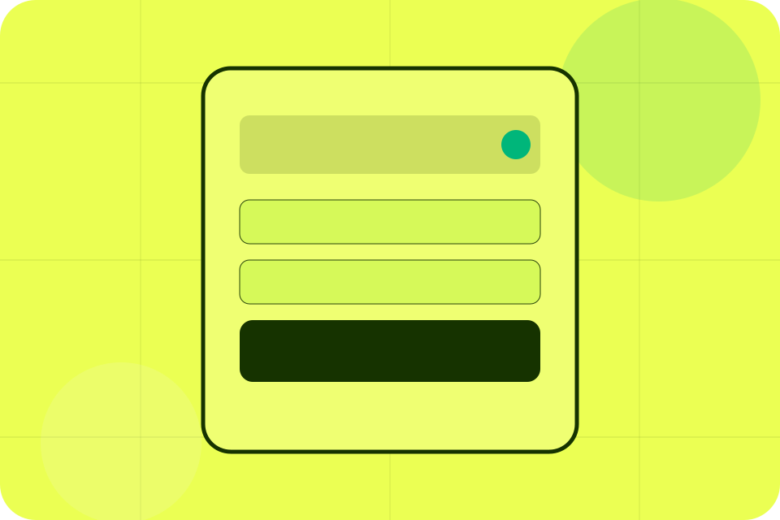
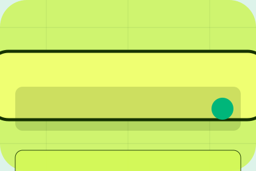

Before
The uncertainty, delay, or missed opportunity visitors bring into outcomes.
Results / 01
Results opens as a clear finance decision hub: what Harbor offers, who it helps, why it matters, and which route to take first.
The first screen combines positioning, proof, primary action, and fast internal navigation, so people can act immediately or compare the rest of the results route with context.
Money movement calculator hero
Select the closest route and Harbor keeps the next step, proof, and follow-up expectation aligned with security and suitability.

Results / 02
Outcomes shows what changes after the work: clearer decisions, visible progress, and proof points that connect the offer to real outcomes.
The layout connects before-and-after thinking with measured outcomes, making the result easy to scan without promising what the business cannot guarantee.
Explore ResultsThe uncertainty, delay, or missed opportunity visitors bring into outcomes.
The clearer, safer, or more valuable state Harbor is designed to support.
The visible cue that connects outcomes to a believable decision, not a loose claim.
Results / 03
Savings shows what changes after the work: clearer decisions, visible progress, and proof points that connect the offer to real outcomes.
The layout connects before-and-after thinking with measured outcomes, making the result easy to scan without promising what the business cannot guarantee.
Explore ResultsThe uncertainty, delay, or missed opportunity visitors bring into savings.
The clearer, safer, or more valuable state Harbor is designed to support.
The visible cue that connects savings to a believable decision, not a loose claim.
Results / 04
Growth shows what changes after the work: clearer decisions, visible progress, and proof points that connect the offer to real outcomes.
The layout connects before-and-after thinking with measured outcomes, making the result easy to scan without promising what the business cannot guarantee.
Explore ResultsThe uncertainty, delay, or missed opportunity visitors bring into growth.
The clearer, safer, or more valuable state Harbor is designed to support.
The visible cue that connects growth to a believable decision, not a loose claim.
Results / 05
Protection defines the better state Harbor is built to create, with enough detail to make the promise believable.
A transfer-calculator finance site with bold green hierarchy, fee transparency, route selection, and trust notes. The section grounds that direction in concrete benefits, visible tradeoffs, and a next route visitors can use when the promise feels relevant.
Explore ResultsProtection defines what becomes clearer, easier, or safer when Harbor is the chosen route.
The benefit is tied to security and suitability, not a vague quality claim.
Visitors get a linked path to compare the promise against services, standards, or examples.
Results / 06
Cases shows what changes after the work: clearer decisions, visible progress, and proof points that connect the offer to real outcomes.
The layout connects before-and-after thinking with measured outcomes, making the result easy to scan without promising what the business cannot guarantee.
Explore ResultsThe uncertainty, delay, or missed opportunity visitors bring into cases.
Results / 07
Reviews shows what changes after the work: clearer decisions, visible progress, and proof points that connect the offer to real outcomes.
The layout connects before-and-after thinking with measured outcomes, making the result easy to scan without promising what the business cannot guarantee.
Explore ResultsThe uncertainty, delay, or missed opportunity visitors bring into reviews.
The clearer, safer, or more valuable state Harbor is designed to support.
The visible cue that connects reviews to a believable decision, not a loose claim.
Results / 08
Metrics shows what changes after the work: clearer decisions, visible progress, and proof points that connect the offer to real outcomes.
The layout connects before-and-after thinking with measured outcomes, making the result easy to scan without promising what the business cannot guarantee.
Explore ResultsThe uncertainty, delay, or missed opportunity visitors bring into metrics.
The clearer, safer, or more valuable state Harbor is designed to support.
The visible cue that connects metrics to a believable decision, not a loose claim.
Results / 09
Notes shows what changes after the work: clearer decisions, visible progress, and proof points that connect the offer to real outcomes.
The layout connects before-and-after thinking with measured outcomes, making the result easy to scan without promising what the business cannot guarantee.
Explore ResultsThe uncertainty, delay, or missed opportunity visitors bring into notes.
The clearer, safer, or more valuable state Harbor is designed to support.
The visible cue that connects notes to a believable decision, not a loose claim.
Results / 10
Harbor closes the results route with a clear action, a quick reminder of the value, and a low-friction way to book an advisor call.
Visitors who are ready can use the primary action. Visitors who are still comparing can scan the section links, proof, and support routes before they book an advisor call.
Book Advisor CallThe final block keeps the choice simple: act now, compare one more proof route, or send enough detail for a focused response.
Book Advisor Callsecurity and suitability
A transfer-calculator finance site with bold green hierarchy, fee transparency, route selection, and trust notes. Results ends with a direct path to book an advisor call, plus enough context for visitors who still need to compare.

Book Advisor CallFinancial content is general information and does not replace regulated personal advice or product disclosure review.